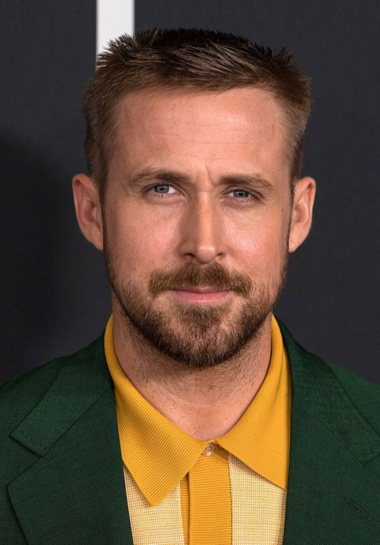
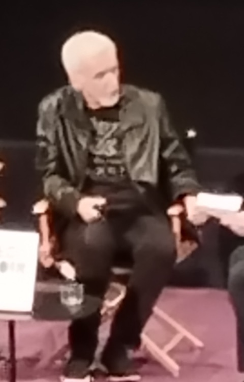
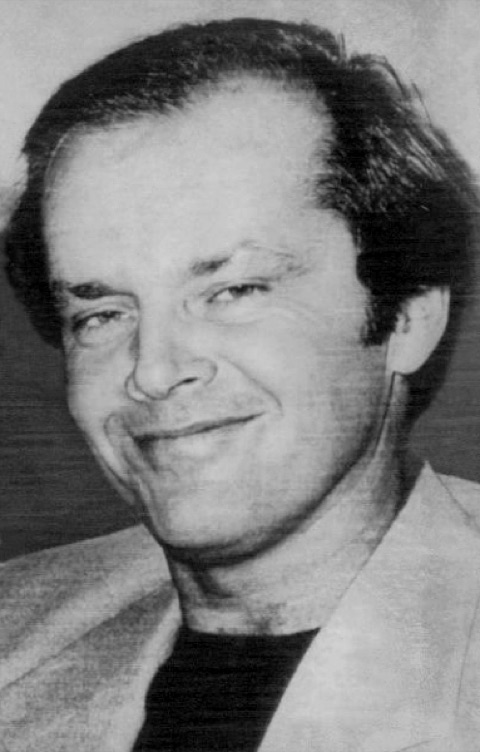
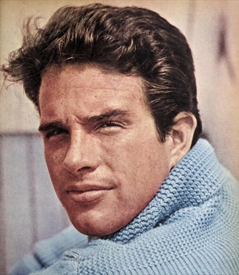
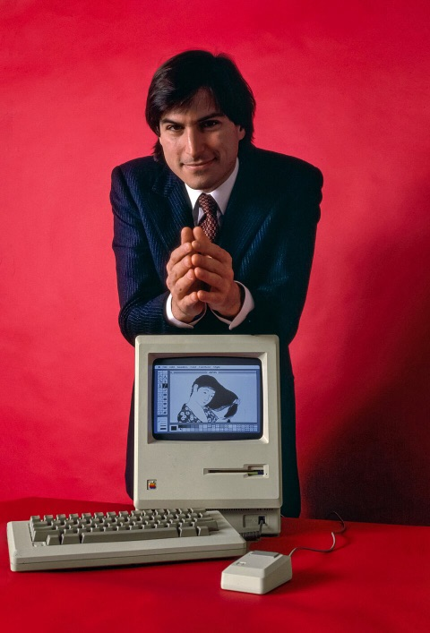

Celebrity Typographic Horrors

You think the famous are safe up there in Hollywood, behind their gates and their sunglasses? Think again. Each of these six stars has had a brush with a typographic horror. The newspapers print the boring version. I print the TRUTH.
I am not saying any of these people are aliens. I am saying the FONTS are.
 Ryan GoslingThe Horror: PAPYRUS He was haunted on national television by a single font. He couldn't eat. He couldn't sleep. Every time he closed his eyes he saw those little flicks on the ends of the letters. Friend, that is not a font. That is what a Papyrus-class transmission looks like when it gets into your head. Note the green jacket. He knows. The boring version: in a 2017 "Saturday Night Live" sketch he played a man driven to despair by the "Avatar" logo being set in Papyrus. A sequel sketch followed in 2022. |
 James CameronThe Horror: PAPYRUS (the source) The man made a three-hour movie about tall blue aliens and then put its title in the font the aliens use for their menus. Coincidence?? He has been to the bottom of the ocean, folks. What do you think he FOUND down there? This is the only photo I could get. It is blurry like every real UFO photo. That's how you know. The boring version: he directed "Avatar" (2009), whose logo was a lightly modified version of Papyrus. This photo is from a talk he gave in Paris in 2024. |
 Jack NicholsonThe Horror: THE TYPEWRITER PAGES Hundreds of pages, one sentence, typed over and over in columns, in blocks, in little poems. The movie says he was going crazy at a hotel. I say a typewriter left alone in the mountains for a whole winter starts picking up SIGNALS. Look at that smile. That is the smile of a man who has seen a perfectly justified paragraph that he did not type. The boring version: in "The Shining" (1980) his character's novel turns out to be one sentence typed thousands of times. The props department typed the pages for real. |
 Warren BeattyThe Horror: THE ENVELOPE One envelope. One card. Tiny little letters tucked away at the bottom where nobody could read them. In front of a billion people the wrong movie was announced, and nobody could explain how. I can. Somebody swapped the envelope in mid-air, and they did it with a TRACTOR BEAM. Here he is in 1961, many years before, already looking suspicious of stationery. The boring version: at the 2017 Academy Awards he was handed the wrong envelope, and "La La Land" was named Best Picture instead of "Moonlight." Designers blamed the card's small, hard-to-read type. |
 Steve JobsThe Horror: THE RANSOM NOTE FLYER A fellow EXPERT CALLIGRAPHER, which is why I'm on to him. He took one lettering class, and next thing you know every computer has 40 fonts and every lost-cat poster in America uses all of them at once. Look at that box on the table. The screen is tiny. The mouse has no tail ball. Where did this technology COME FROM, Steve? Hands folded like that is a known greeting. The boring version: he said a calligraphy class he dropped in on in college is why the first Macintosh (1984, shown here) had many typefaces and proportional spacing. |
Tom Hanks The Horror: THE TYPEWRITER HOARD He owns HUNDREDS of old typewriters. Hundreds! What does one man need with all those keys? Build a big enough keyboard and you can type a message that's visible from orbit. I've done the math on my calculator. He is about 40 typewriters away. That ribbon is a rainbow. Typewriter ribbons are not rainbows. Think about it. The boring version: he is a well-known collector of manual typewriters and wrote a book of short stories, "Uncommon Type," with a typewriter in each one. |

Seen a celebrity standing near a suspicious font? Don't approach them. Report it to the Mothership.
Anomaly Gallery |
Back to the Mothership |
Photo credits (all public domain or CC0, from Wikimedia Commons)
Ryan Gosling, 2018: Aubrey Gemignani, NASA, public domain
James Cameron, 2024: ManoSolo13241324, CC0 (cropped)
Jack Nicholson, 1976: Associated Press press photo, public domain
Warren Beatty, 1961: Globe Photos, from Photoplay, public domain
Steve Jobs, 1984: Bernard Gotfryd, Library of Congress, public domain
Tom Hanks, 2014: U.S. Department of State, public domain
The jokes on this page are jokes. None of these people has been accused of anything by anyone, except by me, and I'm kidding.
www.geocities.com/Area51/Meteor/2178/celebrities.html
No celebrities were abducted in the making of this page. That we know of.